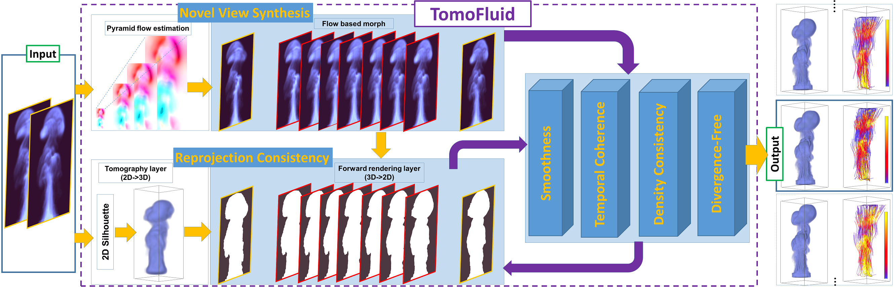
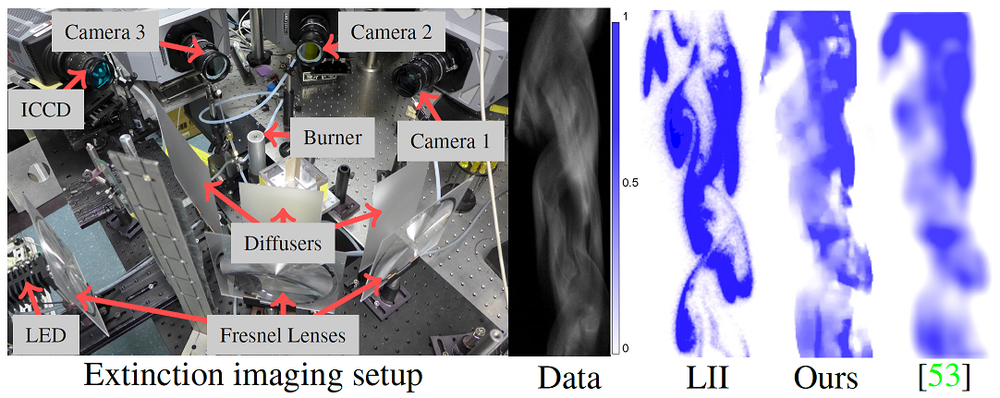
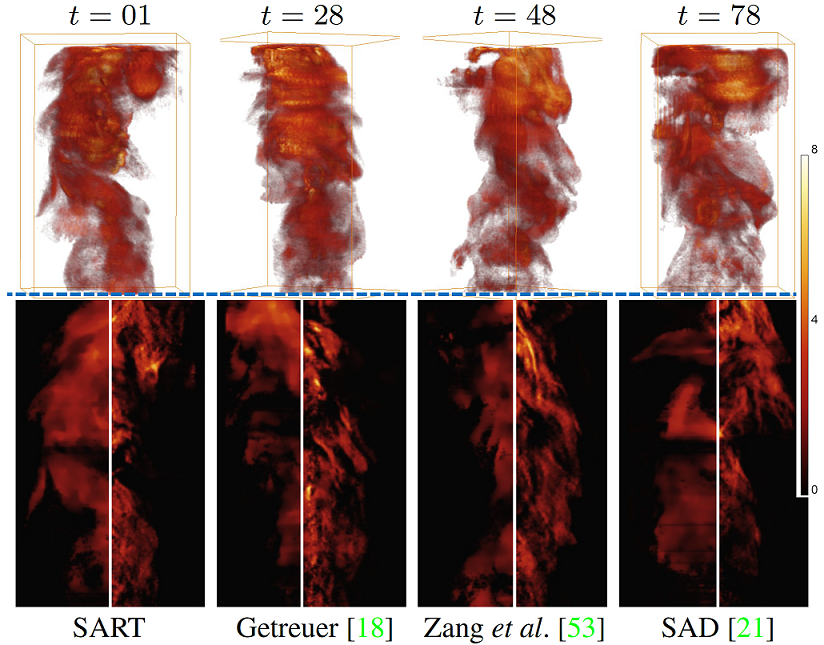
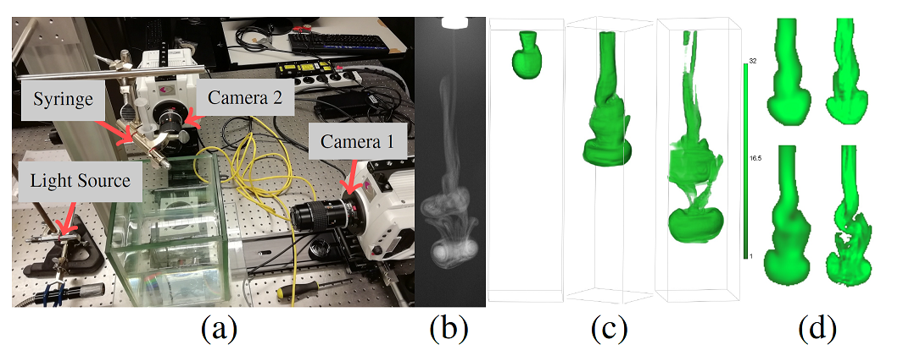
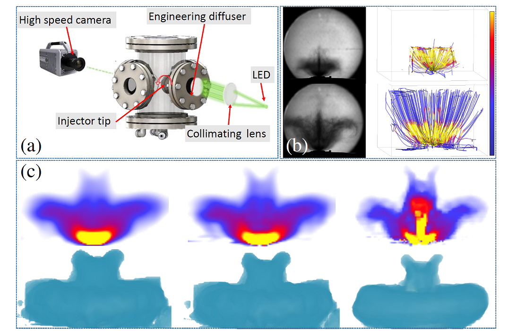

Overview of the architecture of our framework.
Abstract
Visible light tomography is a promising and increasingly popular technique for fluid imaging. However, the use of a sparse number of viewpoints in the capturing setups makes the reconstruction of fluid flows very challenging. In this paper, we present a state-of-the-art 4D tomographic reconstruction framework that integrates several regularizers into a multi-scale matrix free optimization algorithm. In addition to existing regularizers, we propose two new regularizers for improved results: a regularizer based on view interpolation of projected images and a regularizer to encourage reprojection consistency. We demonstrate our method with extensive experiments on both simulated and real data.
Main results
4D Soot Imaging of the turbulent flame
Extinction imaging and planar laser induced incandescence
setup (LII)

Reconstructed results for a highly turbulent flame.

4D Imaging of a Mixing Fluid Process
(a) The set up for capturing fluid images with two views.
(b) One captured image from the setup (c) Our reconstruction at
different time frames and viewing angles. (d) Slice comparison
between Zang et al. [53] and our method for two different time
frames.

4D Imaging of a Fuel Injection Process
(a) The set up for capturing spray images. (b) Captured
images at two time frames (left) and estimated flow field illustrated
with streamlines. (c) Reconstruction results for SAD regularized
method [21], Zang et al. [53], and Ours. First and second row of
(c) represents respectively reconstructed slice and the volume.

@InProceedings{zang2020tomofluid,
title={TomoFluid: Reconstructing Dynamic Fluid from Sparse View Videos},
author={Zang, Guangming and Idoughi, Ramzi and Wang, Congli and Bennett, Anthony and Du, Jianguo and Skeen, Scott and Roberts, William and Wonka, Peter and Heidrich, Wolfgang},
booktitle = {Proceedings of the IEEE Conference on Computer Vision and Pattern Recognition (CVPR)},
year = {2020},
publisher={IEEE}
}